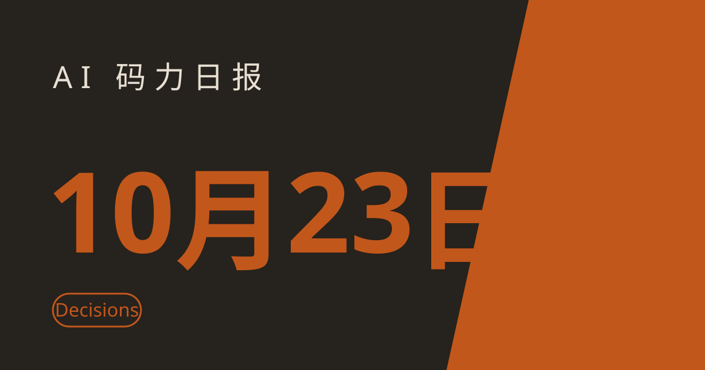

AI 码力日报 · 2026年10月23日

⚡ 一句话速览
- OpenAI Decisions API 正式可用：GPT-6 Luna 驱动，判定类任务比走 Responses API 快 10 倍，输入 $0.10 / 百万 token，单请求最多塞 400 个问题。
- Anthropic 新版 API 动了根基：2026-10-21 版直接砍掉 temperature、top_p、top_k，带这些参数的请求会 400 报错——调 Claude API 的今天就该看迁移指南。
- Google 把 Gemini 塞进车里和地图里：个人智能接进地图搜索与收藏地点，美国 CarPlay 用户已经能在 Google Maps 里直接跟 Gemini 对话导航。
- DeepSeek 约 150 亿美元融资收尾：宁德时代、腾讯领投，目标额从 500 亿元一路翻倍到 1000 亿元——就在美国下令联邦机构移除 DeepSeek 的两天后。
🤖 今日 AI Coding 动态
先查版本：LiteLLM 1.107.0 遭投毒，装过的机器当已沦陷处理
跟你有啥关系：如果你在用 LiteLLM 当多模型网关，这条优先级高于一切。10 月 21 日 11:39 到 13:20 UTC（约 100 分钟），PyPI 上的 LiteLLM 1.107.0 是被投毒的版本，Docker 镜像（含 latest 标签）也在 13:53 UTC 前中招。攻击者用偷来的三名工程师 GitHub CLI token 推了这个版本，植入的文件在 Python 启动时就运行——哪怕你从没 import litellm——会偷 SSH 密钥、云和 CI 凭证、LLM provider key，还装了一个每小时拉新代码的加载器（据 StepSecurity 称第二阶段当时还没启用）。安全版是 1.106.2。我的处理建议很直接：装过 1.107.0 或在那个窗口拉过镜像的，别只升级了事，把机器当已沦陷、把所有密钥轮换一遍。网关手里攥着所有厂商的 key，本来就是攻击者最想偷的东西。原文链接
OpenAI Decisions API 转正：判定类任务别再拿大模型当分类器使了
跟你有啥关系：做内容分类、工单分流、交易归类这类"答案有界"的事，以前要么调小模型将就、要么拿大模型慢慢等，现在有了官方的中间档。10 月 22 日 OpenAI 宣布 Decisions API 正式可用（结束公开测试），底层是 GPT-6 Luna，返回有界、有类型的答案：概率、选项或打分 rubric，单请求最多 400 个问题，文本、图片、结构化输入都能吃。官方说法是比经 Responses API 问 GPT-6 Luna 快 10 倍，Box、Datadog、Ramp、Sierra、Speak 已经在用。定价也贴着"判定"这个定位：输入 $0.10 / 百万 token、缓存输入 $0.01 / 百万 token，不收输出 token 费。我觉得这个 API 的意义不在模型多强，而在它把"判断"从聊天里拆出来变成可计价的基础设施——以后分类分流类需求，先看它够不够用，别一上来就上旗舰模型烧钱。原文链接
Anthropic 发了三年来的第一个正式 API 大版本：temperature、top_p、top_k 说没就没
跟你有啥关系：只要你的代码调 Claude API，这就是个会炸生产环境的变更。2026-10-21 版是 Anthropic 自 2023 年以来第一个正式 API 版本，Messages API 里直接移除了 temperature、top_p、top_k 三个采样参数；另外 assistant 轮次里带文档、user 轮次里带引用也会返回 400。新版 SDK 大版本和 ant CLI 默认就是 2026-10-21，并附了迁移指南。好消息是老版本 2023-06-01 暂未废弃，Anthropic 也表示以后会更频繁地发 API 版本、让开发者有时间消化不兼容变更。我的建议：先别急着升级生产环境，在 staging 用新版跑一遍——特别是那些靠 temperature 控随机性的提示词工程，参数没了之后输出分布变了都不知道从哪调起。原文链接
Google 的 Gemini 又往车里钻了一步：地图搜索、收藏地点、CarPlay 全接上
跟你有啥关系：开车场景是 agent 最容易落地的个人场景之一，Google 正在把 Gemini 钉进这个场景的每个入口。10 月 22 日，Gemini 应用的个人智能（Personal Intelligence）扩展了 Google Maps 集成：经你许可后，Gemini 可以引用你的地图搜索和收藏地点，结合日历给行程建议——比如"开完会去哪家收藏的餐厅"，它会先看你上一场会议的地点再推荐附近的店。同日，美国 Apple CarPlay 用户也能在 Google Maps 里直接跟 Gemini 对话了：点车机上的 Gemini 图标，多轮问答、沿途找店、避开收费路段导航都不用再点菜单。Google 还放出风声：AI Ultra 订阅者会收到提示，Gemini 4 Argon 将"很快取代 Deep Think"。开车不用手、建议不用翻，这两件事拼起来，个人智能才算真的从手机走进了生活。原文链接、CarPlay 报道
DeepSeek 约 150 亿美元融资收尾：美国刚下禁令，中国资本就加了注
跟你有啥关系：不管你用不用 DeepSeek 的模型，这轮融资都会影响接下来开源模型的竞争烈度。据路透 10 月 22 日引述知情人士报道，DeepSeek 本轮融资约 1000 亿元（约 150 亿美元），已接近完成，宁德时代和腾讯是最大投资方，美团、美的、吉利、兆易创新等新入局，投资方超过 15 家；目标额从最初的 500 亿元翻了一倍，投前估值据报道为 5000 亿元。时间点值得注意：就在两天前，美国刚下令联邦民事机构从系统中移除 DeepSeek 技术；6 月那轮 DeepSeek 融了 70 多亿美元、估值 500 亿美元，9 月又有消息称它在为科创板 IPO 做准备。官方尚未证实本轮细节，但方向很清楚：禁令没有吓退资本，反而让 DeepSeek 的弹药更足了，开源模型这条赛道只会更卷。原文链接
🐑 今日羊毛
NVIDIA NIM：免绑卡每月 1000 credits，白嫖 DeepSeek-V4 和 Nemotron 3
一句话：NVIDIA 的托管推理 API（build.nvidia.com）每月给 1000 credits，不用绑卡，OpenAI 兼容，目录里有 DeepSeek-V4-Pro / Flash 和 Nemotron 3（都是 100 万 token 上下文）。
- 怎么薅：去 build.nvidia.com 注册免费的 NVIDIA 开发者账号，点任意模型选 "Get API Key"，几秒就拿到 key；把 OpenAI 客户端的 base_url 指到
https://integrate.api.nvidia.com/v1就能调，模型名按owner/model-slug格式、以站内当前 slug 为准。直达链接 - 有效期：长期免费层（截至撰写时），每月重置，仅限原型开发和研究，生产要用 NVIDIA AI Enterprise 许可
- 适合谁：想零成本试 100 万上下文大模型、或以后打算自托管 NIM 容器的人；注意免费层约 40 RPM，超了返回 429
Mistral：每月 $10 API 额度，不用绑卡就能调全目录
一句话：Mistral 免费计划每月给 $10 API 额度，据其文档说明不用绑卡，模型覆盖 Medium、Small、Codestral 等全目录。
- 怎么薅：去 Mistral 控制台注册免费计划拿 key，直接按 API 文档调；额度在控制台可见，用之前先确认当月剩余额度。直达链接
- 有效期：按月发放（截至撰写时），注意免费模式的提示词可能用于模型训练（除非 opt out），别传敏感数据
- 适合谁：想低成本试 Mistral 全家桶、给小项目找个备用模型的人
Cloudflare Workers AI：每天 10000 Neurons，离线级免费推理额度
一句话：Cloudflare Workers 免费档每天给 10000 Neurons（Cloudflare 的算力单位，按模型折算成 token），文本生成上限每分钟 300 请求。
- 怎么薅：开通 Cloudflare Workers 免费档，走 Workers AI 的
/ai/run接口调目录里的模型；注意 Kimi K2.6 / 2.7、GLM 5.2 / 5.3、DeepSeek V4 这类新模型被标为需付费计划，选模型前先看目录标注。直达链接 - 有效期：长期免费档（截至撰写时），超量后按 $0.011 / 1000 Neurons 计费
- 适合谁：已经在用 Cloudflare 全家桶、想把轻量推理直接挂在边缘上的人；注意它不是 OpenAI 风格接口，要按 Workers AI 的调用方式写
⭐ 今日 GitHub 热门项目
debpalash/VoiceStudio：在自己电脑上跑的开源 ElevenLabs 平替
一句话介绍。解决什么问题：想做语音克隆、配音、播客，又不想把声音数据和钱包交给订阅制服务——VoiceStudio 是完全本地运行的开源语音工作室，克隆、合成都在本机做。⭐ 约 8.1 万（截至撰写时），是本周增速最猛的一批项目之一。适合：做视频配音、播客、有声内容的独立开发者；提醒一句，默认语音模型 OmniVoice 是非商业许可，商用前先确认授权。项目地址
stablyai/orca：一个地方管你手里的一整支 agent 舰队
一句话介绍。解决什么问题：Claude Code、Grok Bot 各跑各的，任务一多就乱——Orca 给你一个统一的地方跑和管理一支 agent 舰队，任务分发、状态查看都在一处。⭐ 约 10.2 万（截至撰写时）。适合：同时开多个 agent 干活、已经被多窗口切换搞烦的人。项目地址
Ebony-Vinyl/dsh-our-free-model：装个插件，免登录免 key 直连免费前沿模型
一句话介绍。解决什么问题：每个平台都要注册、绑卡、领 key 太烦了——这是 DeepSeek Harness（dsh）的一个插件，装上之后模型列表里直接出现 DeepSeek V4.1 Flash、Kimi K3 这类免费前沿模型，不用登录、不用 API key；免费通道来自 OpenCode 的 Zen 和 Kilo AI 的公共网关，本地还带一个 OpenAI 兼容中继、让别的工具也能调。⭐ 约 3.6 万（截至撰写时）。适合：想一个入口横评多家免费模型、又懒得每个平台都注册的人；注意免费网关的名单和额度经常变，用之前先在插件里刷新确认。项目地址
xerj-org/xerj：一个 Rust 二进制，给 agent 配的本地代码搜索引擎
一句话介绍。解决什么问题：agent 在大仓库里找代码全靠翻文件，又慢又容易漏——xerj 是本地优先的搜索引擎和 MCP server，一个 Rust 二进制就能把代码索引起来，让 agent 直接查，比人肉 grep 准得多。⭐ 约 1.3 万（截至撰写时）。适合：仓库大、agent 经常要在代码里找东西的团队。项目地址
🛠️ 值得一试的工具：KnifeLemon/Filee
是什么：免费开源的文件转换器，支持 255 种格式，离线拖放就能转，图片、文档、音视频都在内。
解决什么痛点：在线转换站要么限大小、要么先传文件再转——隐私和速度都别扭。Filee 全程离线，文件不出本机，拖进去、选格式、拿结果，流程就这么简单。⭐ 约 9600（截至撰写时），单日新增约 8800 star，说明大家对"不用上传的转换器"需求是真实存在的。
免费额度：开源免费，无订阅。
verdict： 值得试——离线这个卖点本身就值一个安装位，尤其适合经常要转格式、又不想把文件往陌生网站上送的人；注意转换质量因格式而异，重要文件转完先抽查再交付。
🎓 3 分钟小教程：3 分钟接通 NVIDIA NIM 免费层，白嫖大模型跑起来
前置条件：Python 3.10+，一个能联网的终端，NVIDIA 开发者账号（免费注册，不用绑卡）。
- 去 build.nvidia.com，点任意模型选 "Get API Key"，把 key 存好（只显示一次，丢了就重建）。
- 装 OpenAI 官方 SDK（NIM 兼容它的调用方式）：
bash pip install openai - 写个最小脚本
nim_test.py，把base_url指到 NIM、模型填站内当前 slug（示例用 llama 3.3 70B，具体 slug 以 build.nvidia.com 为准）： ```python from openai import OpenAI
client = OpenAI(
api_key="你的 NVIDIA key",
base_url="https://integrate.api.nvidia.com/v1",
)
resp = client.chat.completions.create(
model="meta/llama-3.3-70b-instruct",
messages=[{"role": "user", "content": "用一句话解释什么是 MoE"}],
)
print(resp.choices[0].message.content)
4. 跑起来：bash
python nim_test.py
```
预期效果：终端里立刻返回模型的一句话解释，全程零成本（免费层每月 1000 credits、约 40 RPM）；之后把模型名换成目录里的 Nemotron 3 或 DeepSeek-V4，就能在同一个接口上横评多家大模型。
🏆 本周 Top 5
- Claude Duet：不等你问、先来找你的 agent——Anthropic 的主动 agent 每天先给你简报、每隔几小时巡一圈，agent 大战至此三家齐了。原文
- OpenAI 模型和 Codex 进 Google Cloud——排他时代结束，模型开始像云服务一样多家上架，选云不用再为模型站队。原文
- PHP 严重漏洞补丁提前放出——跑 WordPress、跑 PHP 的站都该在第一时间升级，这次补丁"非常大"，修不全的概率更高。原文
- morluto/rea：指着任何 App，让 agent 反向拆解它是怎么做的——不用源码讲清功能实现，每条结论标"实测 / 推测 / 未知"，本周最火的 agent 工具。项目地址
- Claude 设计蝎毒蛋白 binder，17 个实测结合——AI 设计蛋白从论文走向湿实验验证，生物方向的 agent 应用开始见真东西。原文
数据截至撰写时，仅供参考。